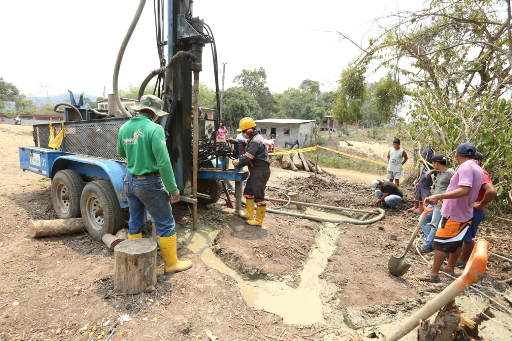

Proyecto 1: Construcción de un Pozo de Agua
La construcción de un pozo de agua asegura una fuente sostenible de agua potable, mejorando la calidad de vida y fomentando el desarrollo comunitario.
El seguimiento del progreso en proyectos sociales es crucial para asegurar que se cumplan los objetivos y se maximice el impacto positivo. Monitorear cada etapa permite realizar ajustes oportunos, mejorar la eficiencia y garantizar la transparencia, lo que fortalece la confianza de todos los involucrados y contribuye al éxito sostenible del proyecto.
La construcción de un pozo de agua asegura una fuente sostenible de agua potable, mejorando la calidad de vida y fomentando el desarrollo comunitario.
La educación para niños es la clave para un futuro mejor. Ayuda a proporcionar recursos educativos y un ambiente de aprendizaje seguro.
Reforestar es sembrar vida y esperanza para un planeta más verde y saludable.
"FutureGo brinda una experiencia única y amigable, facilitando el financiamiento colaborativo y el acceso a recursos esenciales para el éxito de diversos proyectos, conectando donantes con causas significativas y generando un impacto positivo en la sociedad."
En FutureGo, estamos comprometidos con la transparencia y la eficacia. Nuestro objetivo es maximizar el impacto positivo de cada proyecto, asegurando que cada donación se traduzca en mejoras tangibles y sostenibles para las comunidades beneficiadas.
Nuestro objetivo en FutureGo es empoderar a las comunidades y catalizar el cambio social positivo a través del financiamiento colectivo, permitiendo que ideas innovadoras y proyectos cruciales se hagan realidad y mejoren vidas.
El monitoreo constante de nuestros proyectos asegura la correcta utilización de los recursos, fomenta la transparencia y permite realizar ajustes necesarios para maximizar el impacto positivo y alcanzar los objetivos propuestos.